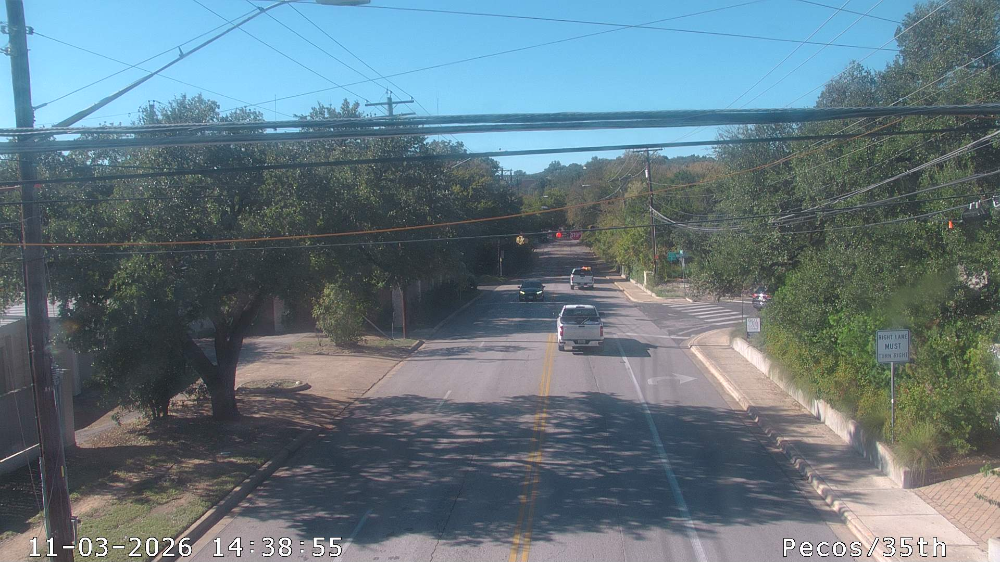
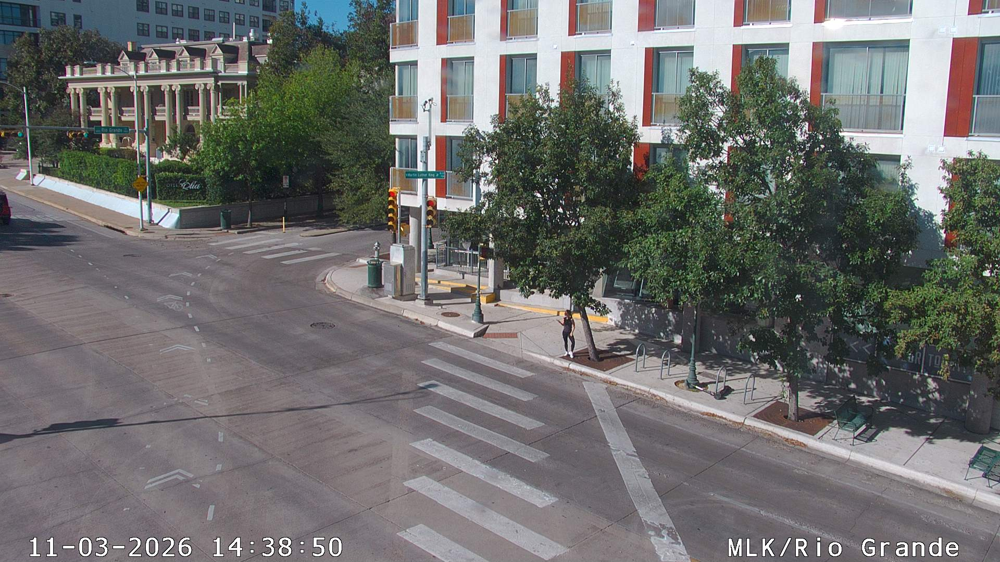

Localizar fuentes de imágenes fijas
Usar Selenium y BeautifulSoup para revisar listados de cámaras, recuperar sus nombres e identificar URLs públicas de capturas. Conservar el contexto de origen al descargar las imágenes en una colección organizada.
Desarrollé flujos en Python para recopilar capturas de cámaras viales públicas y extraer fotogramas de transmisiones de video en directo. El trabajo combina búsqueda de fuentes mediante navegador, descargas y decodificación de video para organizar imágenes que posteriormente podrían apoyar el etiquetado y la investigación en visión por computador.

El problema
Las imágenes de cámaras resultan útiles para el análisis cuando sus fuentes pueden localizarse, consultarse y organizarse de forma consistente. Los endpoints de imágenes fijas y las transmisiones de video en directo requieren métodos de adquisición diferentes; antes de etiquetar o entrenar modelos, hace falta una colección de imágenes utilizable.
Mi aporte
Desarrollé los flujos de adquisición en Python para imágenes fijas y fotogramas de video. En las fuentes de TxDOT, localicé nombres de cámaras y URLs de capturas con Selenium y BeautifulSoup. Para las transmisiones de Jackson Hole, utilicé Streamlink para obtener segmentos de video y OpenCV para decodificar los clips y guardar hasta tres fotogramas JPEG por video.
Enfoque
Usar Selenium y BeautifulSoup para revisar listados de cámaras, recuperar sus nombres e identificar URLs públicas de capturas. Conservar el contexto de origen al descargar las imágenes en una colección organizada.
Utilizar Streamlink para acceder a segmentos de video en directo, en lugar de tratar la transmisión como un endpoint de imagen fija. Decodificar los clips obtenidos con OpenCV y extraer hasta tres fotogramas JPEG de cada video.
El script original de Baylor conserva el método de extracción con OpenCV. El script reorganizado del repositorio público utiliza FFmpeg para extraer fotogramas; por ello, la refactorización pública y la implementación original se describen por separado.
Un futuro flujo de detección organizaría y etiquetaría los fotogramas, separaría los datos por cámara y momento, entrenaría un modelo y evaluaría escenas reservadas para prueba. La evaluación incluiría precisión, exhaustividad (recall), mAP y generalización entre puntos de vista, condiciones de iluminación y clima.
Resultado y alcance
Los flujos repetibles en Python establecieron la etapa de adquisición necesaria para crear un conjunto de imágenes etiquetadas. El proyecto demuestra recopilación y organización de imágenes; no reporta un detector de vehículos entrenado ni resultados de detección de objetos.
Aprendizaje y evolución
La adquisición de datos y la evaluación de modelos deben diseñarse conjuntamente. Los identificadores de las fuentes y el contexto de captura permiten preparar futuras pruebas separadas por cámara y momento. Distinguir imágenes fijas y transmisiones evita forzar fuentes diferentes dentro de un único método de recopilación frágil.
Evidencia y detalles técnicos
Despliega una sección para consultar métodos, figuras o resultados detallados. Selecciona una figura para verla a tamaño completo. Las figuras y capturas originales se acompañan de explicaciones en español.
Cada imagen muestra una vía o intersección distinta de Austin. En conjunto, ilustran la variedad de escenas que debe manejar un flujo de recopilación de imágenes fijas.




Los métodos cambian según el formato de la fuente y la etapa de implementación.
| Fuente o versión | Método de adquisición | Resultado |
|---|---|---|
| Fuentes de imágenes fijas de TxDOT | Localización con Selenium y BeautifulSoup, seguida de descarga de imágenes | Capturas identificadas por nombre de cámara |
| Flujo original de Jackson Hole | Segmentos con Streamlink y decodificación con OpenCV | Hasta tres fotogramas JPEG por video |
| Script público reorganizado | Extracción de fotogramas con FFmpeg | Fotogramas extraídos como imágenes |
Recopilar fotogramas, etiquetar objetos, separar datos por cámara y momento, entrenar un detector y revisar errores en escenas reservadas para prueba. Cualquier recuadro delimitador conceptual mostrado en materiales anteriores del proyecto se añadió manualmente para explicar este flujo futuro; no fue generado por un modelo entrenado.
Proyectos relacionados
Investigador y desarrollador independiente
Desarrollo un flujo reproducible con Sentinel-2 para estudiar el crecimiento urbano en los valles orientales de Quito. El trabajo actual abarca adquisición de imágenes, composición temporal y generación de mosaicos espaciales; un piloto en Tumbaco sirve de base para las siguientes etapas de segmentación de áreas construidas, análisis de cambios y validación independiente.
Desarrollador de flujos de datos en Python
Desarrollé flujos en Python para extraer y estandarizar datos de reporte de gases de efecto invernadero de la EPA correspondientes a 2010–2024. Combiné tablas de instalaciones obtenidas mediante API, clasificaciones de FLIGHT y conciliación por identificadores en archivos CSV reutilizables, avanzando de la automatización exploratoria del navegador hacia una preparación repetible de datos por instalación.
Creador y único desarrollador
Concebí, diseñé y desarrollé una aplicación web que conecta planos arquitectónicos con datos prediales de Quito. Como único desarrollador, construí la interfaz, las APIs en Python, las integraciones de datos municipales y las herramientas interactivas de documentos, creando un espacio para planificar remodelaciones, realizar mediciones y analizar predios espacialmente.
Conversemos
Me interesan los proyectos que conectan el análisis riguroso con aplicaciones útiles.